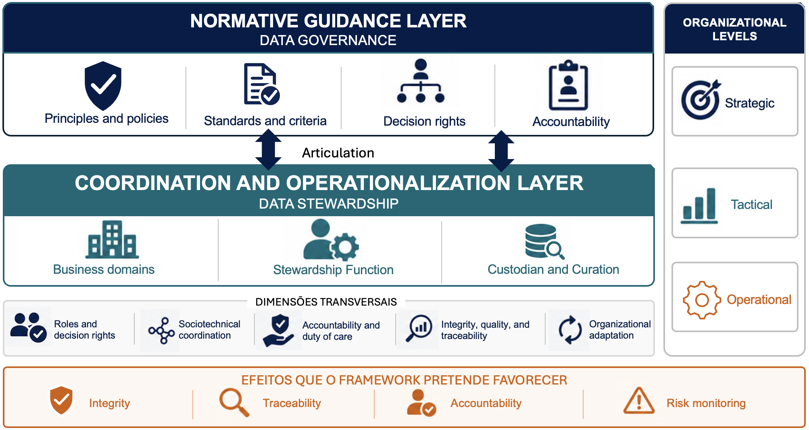

Initial reading
Descriptive Memorandum
Presents the problem addressed, the framework architecture, dimensions, roles, operating flow, expected records, and the hypothetical example.
Read the Descriptive MemorandumMaterials intended to assess the clarity, internal coherence, and perceived applicability of the preliminary version of the framework.
The map presents the layers, organizational levels, cross-cutting dimensions, and effects that the framework is intended to support.

Presents the problem addressed, the framework architecture, dimensions, roles, operating flow, expected records, and the hypothetical example.
Read the Descriptive MemorandumDetails the framework components, responsibilities, limits of action, coordination rules, records, and organizational adaptation possibilities.
Read the Consolidated SpecificationUnderstand the purpose, operating logic, and elements that form the framework.
Use this document to review roles, limits, relationships, and the expected mechanisms.
Record your assessment of clarity, internal coherence, and perceived applicability.
The questionnaire includes closed items on a Likert scale and open-ended questions. Participant profiles are recorded without personal identification.